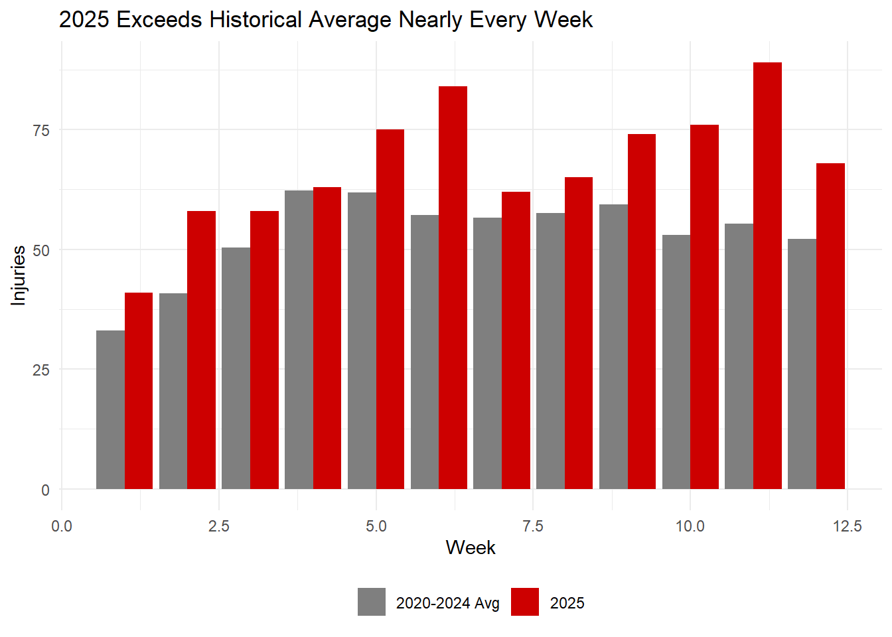
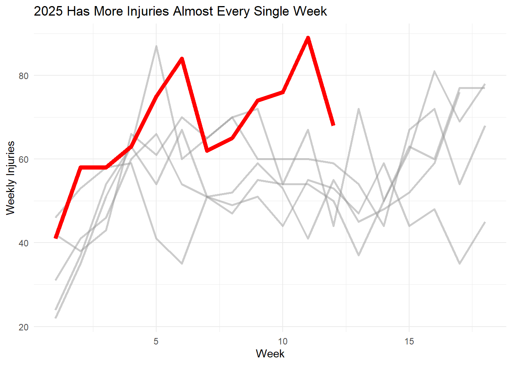
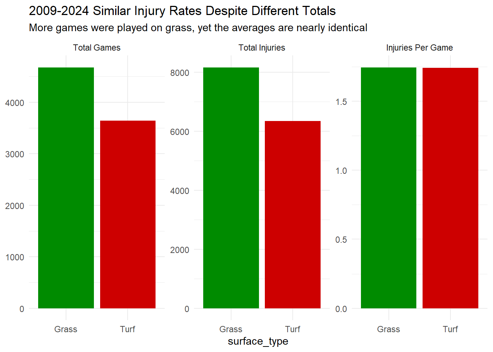
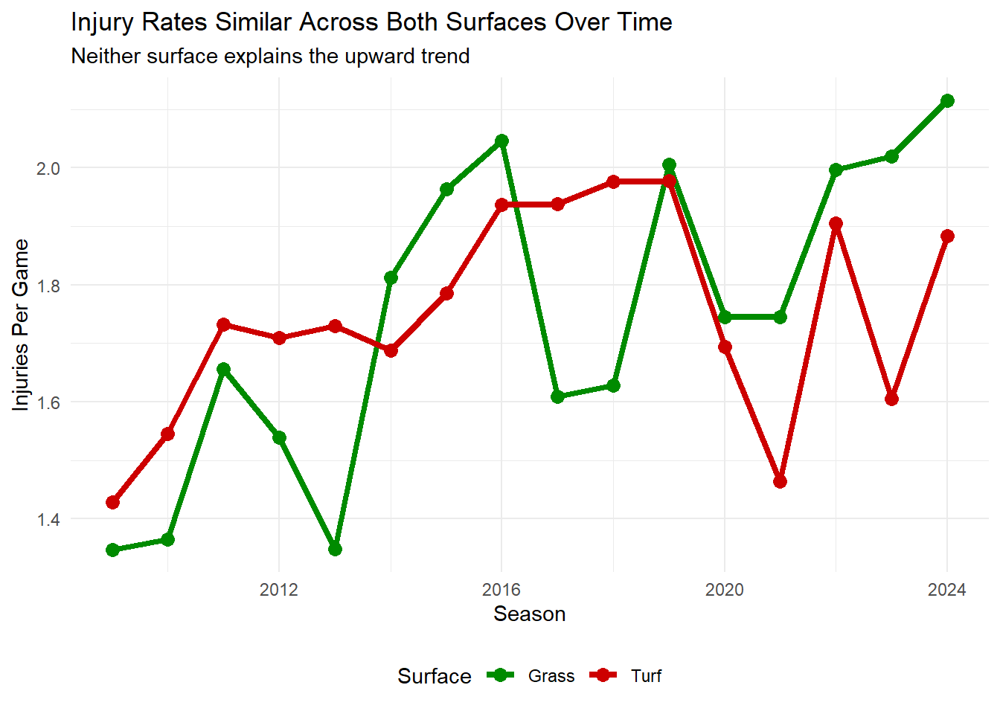
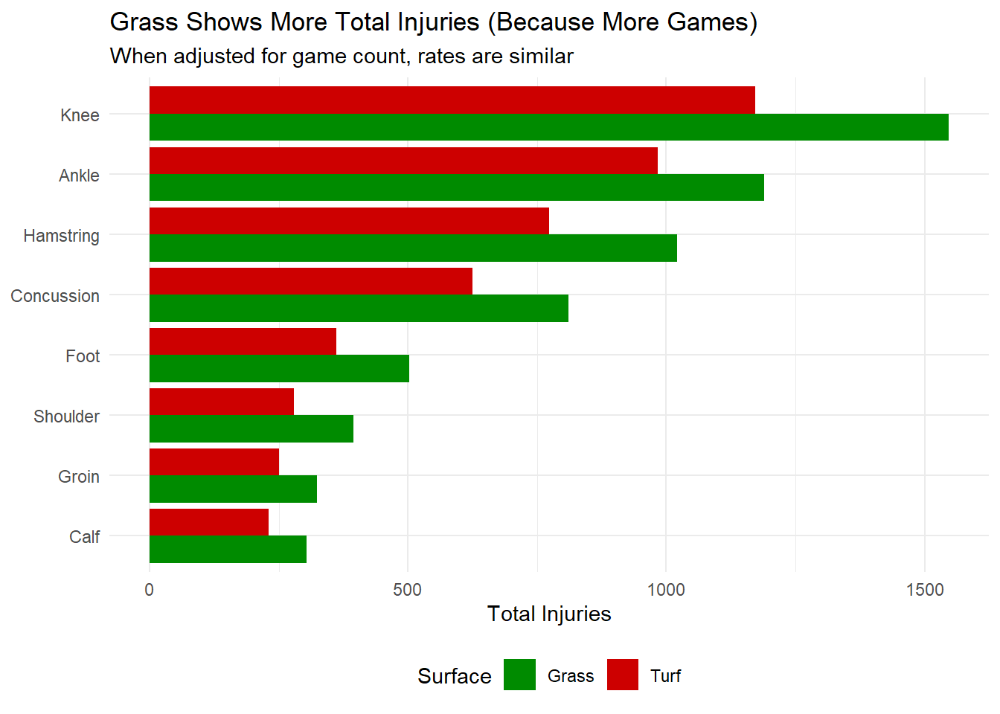

Every week of the 2025 NFL season brings the same grim news: more injuries, more stars sidelined, more backup quarterbacks taking snaps. Through twelve weeks, this season is tracking to be the worst injury year on record. Players and fans are rightfully demanding answers.
The easy answer? Blame the turf. Artificial surfaces have been a popular scapegoat for years, with high profile players calling for grass mandates across the league. But when you actually dig into the data, turf isn’t driving the 2025 injury surge. Something else is broken.
Let’s start with how bad it really is. Through 12 weeks, the 2025 season has seen significantly more injuries than any comparable point in NFL history.
Code
avg_by_week <- injuries_historical |>filter(season >=2020, report_status =="Out") |>count(week) |>mutate(avg_historical = n /5) |>select(week, avg_historical)comparison_bars <- injuries_2025 |>select(week, injuries_2025 = injury_count) |>left_join(avg_by_week, by ="week") |>pivot_longer(cols =c(injuries_2025, avg_historical), names_to ="period", values_to ="injuries")ggplot(comparison_bars, aes(x = week, y = injuries, fill = period)) +geom_col(position ="dodge") +scale_fill_manual(values =c("avg_historical"="gray50", "injuries_2025"="red3"),labels =c("2020-2024 Avg", "2025")) +labs(title ="2025 Exceeds Historical Average Nearly Every Week",x ="Week", y ="Injuries",fill =NULL ) +theme_minimal() +theme(legend.position ="bottom")

Week after week, the red bars tower over the gray. This isn’t a one week spike or a statistical fluke. 2025 is consistently, measurably worse than the five year average. Almost every single week has exceeded historical norms.
Code
recent_comparison <- injuries_historical |>filter(season >=2020, report_status =="Out") |>group_by(season, week) |>summarize(weekly_outs =n(), .groups ='drop') |>bind_rows( injuries_2025 |>select(season, week, weekly_outs = injury_count) )ggplot(recent_comparison, aes(x = week, y = weekly_outs, group = season, color =factor(season))) +geom_line(data = recent_comparison |>filter(season <2025), size =1, alpha =0.5) +geom_line(data = recent_comparison |>filter(season ==2025), size =2, color ="red") +scale_color_manual(values =c(rep("gray60", 5), "red")) +labs(title ="2025 Has More Injuries Almost Every Single Week",x ="Week", y ="Weekly Injuries" ) +theme_minimal() +theme(legend.position ="none")

When you plot 2025 against recent seasons, the story becomes even clearer. That red line sits above the pack almost constantly. The league isn’t just having a bad month but it’s having a catastrophically bad season from start to finish.
By Week 12, 2025 has pulled significantly ahead of 2022, 2023, and 2024 in cumulative injuries. The gap isn’t closing but it’s widening. If this pace continues through the remaining weeks, 2025 will shatter previous records.
Based on current trends, the season is projected to finish with over 1,300 total missed games due to injury. That would represent a substantial increase over 2024 and mark the highest count in the modern injury reporting era.
For years, the narrative has been simple: artificial turf causes more injuries than natural grass, particularly lower body injuries like knees, ankles, and hamstrings. Players hate it. The Players Association wants it banned. It seems like an obvious culprit for rising injury rates.
But the data doesn’t support turf as the driver of the 2025 surge.
Code
schedules <-load_schedules(seasons =2009:2024) |>filter(game_type =="REG")game_surfaces <- schedules |>select(season, week, home_team, away_team, surface) |>filter(!is.na(surface)) |>mutate(surface_type =if_else(str_detect(tolower(surface), "grass"), "Grass", "Turf"))injuries_with_team <- injuries_historical |>filter(report_status =="Out", !is.na(team))injuries_home <- injuries_with_team |>left_join( game_surfaces |>select(season, week, team = home_team, surface_type),by =c("season", "week", "team") )injuries_away <- injuries_with_team |>left_join( game_surfaces |>select(season, week, team = away_team, surface_type),by =c("season", "week", "team") )injuries_with_surface <-bind_rows(injuries_home, injuries_away) |>filter(!is.na(surface_type)) |>distinct()games_by_surface <- game_surfaces |>pivot_longer(cols =c(home_team, away_team), values_to ="team") |>count(surface_type, name ="games")injury_totals <- injuries_with_surface |>count(surface_type, name ="injuries")comparison_data <- games_by_surface |>left_join(injury_totals, by ="surface_type") |>mutate(injuries_per_game = injuries / games) |>pivot_longer(cols =c(games, injuries, injuries_per_game),names_to ="metric", values_to ="value")ggplot(comparison_data, aes(x = surface_type, y = value, fill = surface_type)) +geom_col() +facet_wrap(~ metric, scales ="free_y", labeller =labeller(metric =c(games ="Total Games",injuries ="Total Injuries", injuries_per_game ="Injuries Per Game" ))) +scale_fill_manual(values =c("Grass"="green4", "Turf"="red3")) +labs(title ="2009-2024 Similar Injury Rates Despite Different Totals",subtitle ="More games were played on grass, yet the averages are nearly identical",y =NULL ) +theme_minimal() +theme(legend.position ="none")

When you look at total injuries by type, grass accounts for more than turf in nearly every category. Knee injuries? More on grass. Ankle injuries? More on grass. Hamstrings? Grass again.
But that’s misleading. More games are played on grass which is about 56% versus 44% turf. When you calculate injuries per game played, the rates are virtually identical. Turf isn’t meaningfully more dangerous.
More importantly, the turf to grass ratio has barely changed over the past five years. If turf were driving the 2025 spike, we’d need to see massive new turf installations. We don’t. The 56/44 split has held steady while injuries climbed 15 to 20%.
Code
injury_rates <- injuries_with_surface |>count(season, surface_type) |>left_join( game_surfaces |>pivot_longer(cols =c(home_team, away_team), values_to ="team") |>count(season, surface_type, name ="games"),by =c("season", "surface_type") ) |>mutate(injuries_per_game = n / games)ggplot(injury_rates, aes(x = season, y = injuries_per_game, color = surface_type, group = surface_type)) +geom_line(size =1.5) +geom_point(size =3) +scale_color_manual(values =c("Grass"="green4", "Turf"="red3")) +labs(title ="Injury Rates Similar Across Both Surfaces Over Time",subtitle ="Neither surface explains the upward trend",x ="Season", y ="Injuries Per Game",color ="Surface" ) +theme_minimal() +theme(legend.position ="bottom")

If turf were causing the 2025 spike, we’d see this red line pulling dramatically away from the green. We don’t. Both surfaces show the same troubling upward trend.
Code
injury_by_type_surface <- injuries_with_surface |>filter(!is.na(report_primary_injury)) |>count(surface_type, report_primary_injury)top_injuries <- injury_by_type_surface |>group_by(report_primary_injury) |>summarize(total =sum(n)) |>slice_max(total, n =8) |>pull(report_primary_injury)injury_surface_bars <- injury_by_type_surface |>filter(report_primary_injury %in% top_injuries)ggplot(injury_surface_bars, aes(x =reorder(report_primary_injury, n), y = n, fill = surface_type)) +geom_col(position ="dodge") +scale_fill_manual(values =c("Grass"="green4", "Turf"="red3")) +coord_flip() +labs(title ="Grass Shows More Total Injuries (Because More Games)",subtitle ="When adjusted for game count, rates are similar",x =NULL, y ="Total Injuries",fill ="Surface" ) +theme_minimal() +theme(legend.position ="bottom")

Even for injury specific analysis, grass shows higher raw totals simply due to more games played. The pattern is consistent: turf isn’t the villain here.
Thursday Night Football forces teams to play on three days rest. Bodies can’t recover that fast. Soft tissue injuries like hamstrings, calves, and groins are textbook signs of inadequate recovery. The 2025 schedule packed in more short week games than ever, especially early in the season when the injury spike began.
The NFL is faster than ever. Linebackers run 20+ mph making violent cuts. Physics is unforgiving: kinetic energy increases with the square of velocity. Faster players mean exponentially larger collision forces. Human ligaments weren’t designed for this.
After criticism about “soft” practices, teams ramped up 2025 training camps. More contact, longer sessions, harder conditioning. Multiple teams reported unusual soft tissue injuries in August and September. Players entered the season already compromised.
Unseasonably hot temperatures hit multiple NFL markets in September and October. Heat exhaustion and cramping increase injury risk. Several high profile injuries happened in late game situations when fatigue compounded the heat.
Modern NFL football has outpaced human biology. Players are bigger, faster, stronger. But ACLs can only handle so much torque. Hamstrings can only fire so many times. When forces exceed what tissue can withstand, injuries are inevitable.
The league made superficial changes like helmet rules, concussion protocols, and targeting penalties. These help on the margins. But they don’t address the core problem: the game is too fast, too violent, and too compressed for bodies to survive intact.
Banning turf would be popular with players. It might reduce injuries slightly. But it won’t solve the 2025 crisis or prevent the 2026 crisis.
Real solutions require painful choices: longer seasons with more bye weeks, eliminating Thursday games, and mandatory rest periods. These cost money and disrupt TV schedules. So the league keeps tweaking around the edges while injuries climb.
Six weeks remain in the regular season. The injury count will only grow. We’re heading toward the worst season in modern NFL history.
Players will keep calling for turf bans, and that’s understandable. But even if every stadium switched to grass tomorrow, it wouldn’t stop the bleeding.
The problem isn’t what players run on. It’s how fast they’re running, how often, and how little recovery time they get. Until the NFL addresses those structural issues, injuries will keep climbing regardless of surface.
For now, get used to backup quarterbacks, practice squad callups, and injury depleted rosters. In 2025, that’s not the exception but it’s reality.